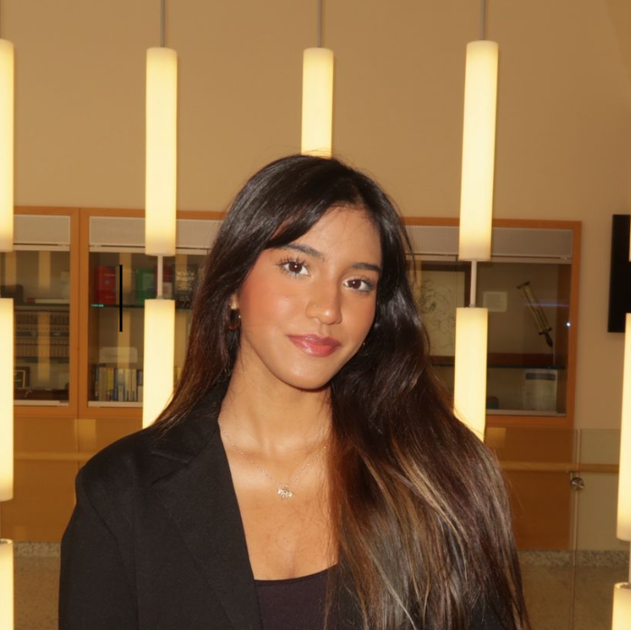

hello, glad you're here!
Finding new ways to implement and improve tech to solve real-world problems.
↓ scroll to get to know me
about me
My goal is to build projects that solve real-world problems, big or small. This drive has led me into software development, where I've built skills across the stack. From front-end design to efficient server-side data management. I also like blending different areas of tech, such as combining LLM reasoning with health behavior data to build a medication adherence tracker.
Outside of coding, you'll find me reading in a park or by the pool, or singing along at a concert.

Rakrita Rao
Collaborated with a 5-person team at KPMG to analyze AI adoption and energy metrics across simulated corporate environments. Built predictive models projecting up to a 20% reduction in environmental impact while maintaining productivity, and presented findings to KPMG's sustainability division.
A real-time food-rescue marketplace connecting restaurants with surplus food to NGOs, with phone OTP auth and a two-role access system. Uses atomic Firestore transactions so two NGOs can never claim the same listing, and push notifications so nothing goes to waste while people wait.